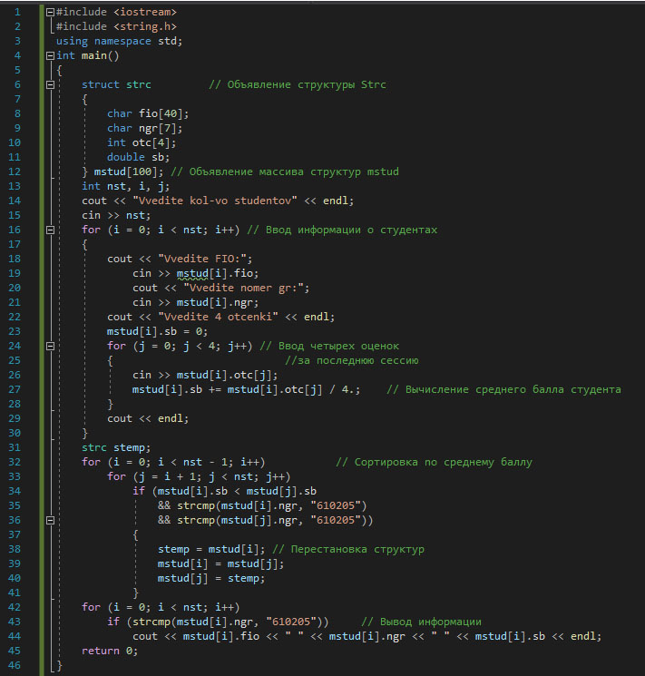

Структура - это составной тип данных, в котором под одним именем объединены данные различных типов. Отдельные данные структуры называются полями. Объявление структуры осуществляется с помощью ключевого слова struct, за которым указывается ее имя и список элементов, заключенных в фигурные скобки:
struct имя { тип_элемента_1 имя_элемента_1; тип_элемента_2 имя_элемента_2; ... тип_элемента_n имя_элемента_n; }
Правила работы с полями структуры идентичны работе с переменными соответствующих типов. К полям структуры можно обращаться через составное имя. Формат обращения:
имя_структуры.имя_поля
или
указатель_на_структуру->имя_поля
Задание. Создать массив структур, содержащий информацию о студентах: ФИО, номер группы, оценки за последнюю сессию. Вывести информацию о студентах группы 610205 в порядке убывания среднего балла.
Код программы для решения данной задачи будет выглядеть следующим образом:
